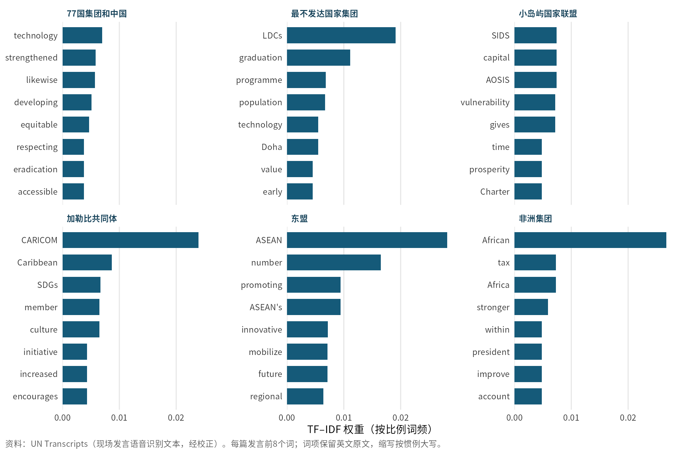
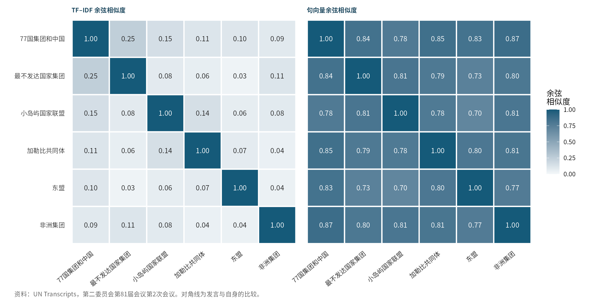
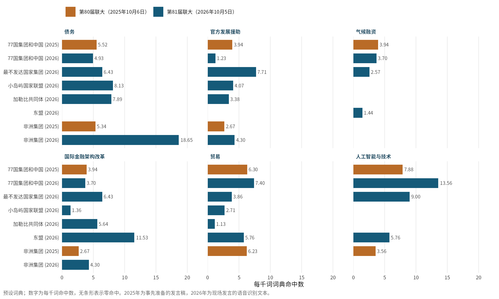
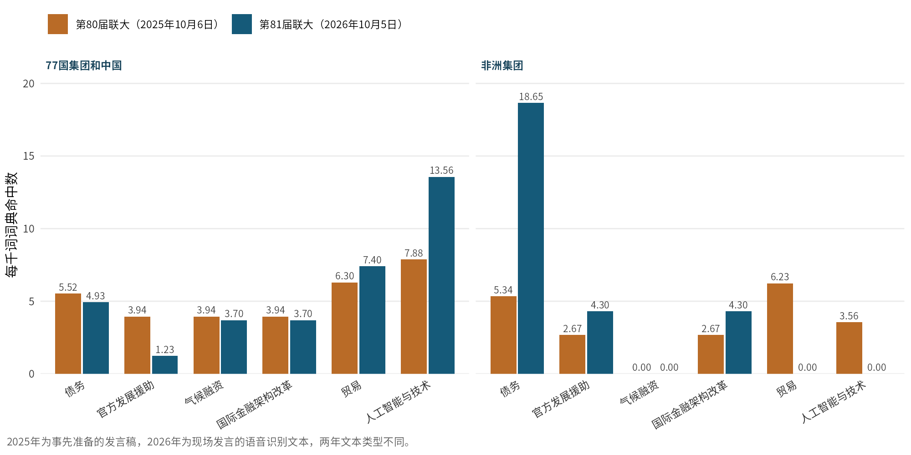

国际组织中的南方国家
谁代表南方发声？第81届联大第二委员会开幕辩论中的77国集团及其次级集团
2026年10月5日，联合国大会第二委员会（经济和金融委员会）以“在不断变化的全球经济中为可持续发展筹资，加快落实可持续发展目标”为主题开启一般性辩论。在任何发展中国家以本国名义发言之前，六个南方国家集团依次发言：77国集团和中国、东盟、小岛屿国家联盟、加勒比共同体、最不发达国家集团和非洲集团。对这些发言的文本分析显示：每个次级集团的发言与77国集团发言的相似度，都高于它与其他次级集团的平均相似度；而各集团最具区分度的词汇则指向各自的议程——最不发达国家关注“毕业”，小岛屿国家关注脆弱性，非洲集团关注信用评级与税收。语料规模很小，结论仅为描述性的。
相似度衡量用词的接近程度（TF–IDF），或以句向量近似的语义接近程度，不能说明协调、影响或立场一致。主题强度为每千词的词典命中数，其基础计数很小（每篇发言每个主题0至13次）。2026年文本为现场发言的自动语音识别（ASR）转写，并非正式记录；2025年文本为事先准备的发言稿。
一、新动态：一个集团，多种声音
在第二委员会，77国集团以统一集团的身份谈判发展类决议。然而，在第81届会议第二委员会第2次会议上（主席为阿尔巴尼亚的苏埃拉·亚尼纳（Suela Janina）），国家发言开始之前，会场先经历了一连串集团发言。根据联合国会议转写记录（UN Transcripts），发言顺序为：乌拉圭代表77国集团和中国；菲律宾代表东盟；土库曼斯坦代表可持续交通之友小组；帕劳代表小岛屿国家联盟；澳大利亚代表加拿大、澳大利亚和新西兰；欧盟；牙买加代表加勒比共同体；冈比亚代表最不发达国家集团；哥斯达黎加代表人类安全之友小组；纳米比亚代表非洲集团。代表集团的发言限时七分钟。联合国会议报道（GA/EF/3619）印证了上述发言归属。
在转写的发言中，加勒比共同体表示赞同77国集团和小岛屿国家联盟的发言，最不发达国家集团表示赞同77国集团的发言；东盟、小岛屿国家联盟和非洲集团的转写文本中没有类似表述。如果“伞形”集团已经代表全体成员发声，次级集团为何还要占用有限的发言时间？可以有两种解读。一是分工：77国集团确立共同框架，次级集团补充具体诉求。二是话语竞争：次级集团提出被伞形发言稀释或略去的优先事项。
- 相互重叠的南方次级集团的发言，在多大程度上重复、细化或偏离77国集团的信息？
- 各次级集团是否更强调与自身利害最相关的议题？
- 这一格局在第80届联大（2025年10月6日，伊拉克担任77国集团主席国）与第81届联大（2026年10月5日，乌拉圭担任主席国）之间是否发生变化？
这些问题承接近期的两条研究脉络。Draguljić 与 Anspach（2025）基于联大唱名表决发现，尽管成员国收入分化，77国集团的团结依然保持；但他们对77国集团外交官的访谈表明，由于许多决议从未付诸表决，基于投票的测量会高估团结程度。Hirschmann、Heupel 与 Kröker（2026）将分析视角从投票转向话语，用一套审议性线索词典分析了27,812篇安理会发言。本文把基于发言的视角用于另一种场合：联大主要委员会中的集团发言。（两项研究的概述均依据已发表的摘要。）
二、数据与方法
语料共八篇发言。其中六篇来自2026年的会议，从 UN Transcripts 的语音识别记录中按发言者切分，发言归属与 GA/EF/3619 交叉核对。2025年只找到两篇全文：伊拉克代表77国集团所作、刊于 g77.org 的发言，以及几内亚比绍代表非洲集团所作、刊于非洲联盟常驻联合国观察员代表团网站的发言。UN Transcripts 对2025年开幕会议显示“无转写记录”，也未找到联合国对该次开幕的新闻摘要。在所查阅的两届会议记录中，均未发现内陆发展中国家集团和阿拉伯集团以集团名义发言；本文将其记为“未找到”，而非“未发言”。
| 集团 | 发言国 | 届次（日期） | 词数 | 文本类型 |
|---|---|---|---|---|
| 77国集团和中国 | 乌拉圭 | 第81届（2026年10月5日） | 811 | 现场发言语音识别 |
| 东盟 | 菲律宾 | 第81届（2026年10月5日） | 694 | 现场发言语音识别 |
| 小岛屿国家联盟 | 帕劳 | 第81届（2026年10月5日） | 738 | 现场发言语音识别 |
| 加勒比共同体 | 牙买加 | 第81届（2026年10月5日） | 887 | 现场发言语音识别 |
| 最不发达国家集团 | 冈比亚 | 第81届（2026年10月5日） | 778 | 现场发言语音识别 |
| 非洲集团 | 纳米比亚 | 第81届（2026年10月5日） | 697 | 现场发言语音识别 |
| 77国集团和中国 | 伊拉克 | 第80届（2025年10月6日） | 1269 | 事先准备的发言稿 |
| 非洲集团 | 几内亚比绍 | 第80届（2025年10月6日） | 1124 | 事先准备的发言稿 |
明显的语音识别错误通过一张含十条规则、有版本记录的校正表加以修正（例如将“Cevier”改为“Sevilla”，将“SEEDS”改为“SIDS”），每一处替换均有日志。原始文件以校验值核验，从未改动。计算词项权重之前，去除了停用词和外交礼仪用语（如“主席女士”“各位阁下”“代表……发言”）。
本文使用四种简单方法。（1）TF–IDF 区分性词项，显示每篇发言在共同发展词汇之外增添了什么；2026年的计算限于同一次会议的六篇发言，词项至少出现两次。（2）余弦相似度，基于 TF–IDF 向量计算，并以句向量（all-MiniLM-L6-v2，按句平均）作稳健性检验，因为词汇重合无法识别同义改写。（3）六主题词典（债务、官方发展援助、气候融资、国际金融机构与金融架构改革、贸易、人工智能与技术），在分析前确定，并通过关键词上下文阅读加以核查。（4）跨年比较仅适用于77国集团和非洲集团。只有八篇文档，主题模型和显著性检验都缺乏依据，本文均未采用。
三、研究发现
3.1 各集团增添了什么：区分性词汇
77国集团发言中最具区分度的词较为宽泛：“technology（技术）”“strengthened（加强）”“likewise（同样）”“developing（发展中）”“equitable（公平）”。作为伞形文本，它使用的是共同原则的语言。次级集团的发言首先以各自的名称相区分，其次是各自的专门议程。最不发达国家集团依次为“graduation（毕业）”“programme（行动纲领）”“population（人口）”“Doha（多哈）”，后两者指向《多哈行动纲领》。小岛屿国家联盟为“SIDS（小岛屿发展中国家）”“capital（资本）”“vulnerability（脆弱性）”。加勒比共同体为“Caribbean（加勒比）”“culture（文化）”“swaps（债务互换）”，后者指债务换气候、债务换自然。非洲集团为“tax（税收）”“credit（信用）”“rating（评级）”，反映其关于透明信用评级方法和国际税收合作的呼吁。东盟为“promoting（促进）”“innovative（创新）”“mobilize（调动）”“regional（区域）”“strategic（战略）”。东盟在“number”一词上得分很高，这是发言方式造成的：菲律宾大使逐条宣读了十项编号的优先事项。

3.2 轴辐结构？与77国集团的相似度
无论采用哪种测量，五个次级集团的发言与77国集团发言的相似度，都高于其与另外四个次级集团的平均相似度。最不发达国家集团的用词联系最强（与77国集团的 TF–IDF 余弦值为0.247，与其他次级集团的平均值为0.070）。按句向量计算，非洲集团与77国集团最接近（0.867）。
| 次级集团 | TF–IDF：与77国集团 | TF–IDF：与其他次级集团平均 | 句向量：与77国集团 | 句向量：与其他次级集团平均 |
|---|---|---|---|---|
| 最不发达国家集团 | 0.247 | 0.070 | 0.838 | 0.783 |
| 小岛屿国家联盟 | 0.152 | 0.094 | 0.780 | 0.776 |
| 加勒比共同体 | 0.114 | 0.081 | 0.849 | 0.796 |
| 东盟 | 0.104 | 0.052 | 0.831 | 0.751 |
| 非洲集团 | 0.088 | 0.070 | 0.867 | 0.797 |
两种测量对次级集团的排序并不一致（五个次级集团的斯皮尔曼相关系数为−0.5）。小岛屿国家联盟在用词上与77国集团的接近程度排第二（0.152），按句向量却最远（0.780，仅略高于其与其他次级集团的平均值0.776）。77国集团也并非每个次级集团唯一的“最近邻”：按 TF–IDF，它是五个次级集团中三个的最相似发言；按句向量，则是五个中的四个。加勒比共同体的用词与小岛屿国家联盟最接近（0.145，与77国集团为0.114），这与其同时赞同两者发言的表态相符。非洲集团的用词与最不发达国家集团最接近（0.110，与77国集团为0.088）。按句向量，小岛屿国家联盟与最不发达国家集团（0.812）和非洲集团（0.807）最接近，77国集团在五者中排第四。距离最远的两组都涉及东盟：按 TF–IDF 为东盟—最不发达国家集团（0.03），按句向量为东盟—小岛屿国家联盟（0.70）。

方法：77国集团的中心位置部分是机械性的。一篇本身就提到最不发达国家与《多哈行动纲领》、内陆发展中国家、小岛屿发展中国家与《安提瓜和巴布达议程》以及中等收入国家的综合性发言，自然会与每一篇专门发言共享词汇。
3.3 按利害关系专门化：六个主题
债务主题在非洲集团的发言中最为突出（每千词18.65次，共13次命中），其后依次为小岛屿国家联盟（8.13）、加勒比共同体（7.89）、最不发达国家集团（6.43）和77国集团（4.93），东盟为零。官方发展援助在最不发达国家集团的发言中最为突出（7.71，共6次命中），该发言重申了将国民总收入的0.15%至0.20%用作对最不发达国家官方发展援助的目标；77国集团2026年的该项比率为1.23。金融架构改革以东盟最高（11.53，共8次命中），但关键词上下文核查显示，“reform*”一项也捕捉到了东盟关于世贸组织改革的呼吁。人工智能与技术集中在77国集团（13.56）、最不发达国家集团（9.00）和东盟（5.76），其余三个集团为零。

气候融资是一个出人意料的结果。按词典统计，它出现在77国集团（3.70）、最不发达国家集团（2.57）和东盟（1.44）的发言中，而在小岛屿国家联盟、加勒比共同体和非洲集团的发言中为零。这与“岛屿集团最重视气候融资”的预期相反，但解读时需谨慎。词典条目为精确短语“climate finance”，在分析前确定、事后未作修改，因此加勒比共同体的一处“climate financing”未被计入。岛屿集团的发言还通过债务、脆弱性和获得优惠融资等词汇来表述气候风险。加勒比共同体提到“一场并非由我们造成的气候危机”，呼吁落实多维脆弱性指数，并鼓励债务换气候互换；小岛屿国家联盟则主张，脆弱性必须成为决定融资获取的因素。总之，最不发达国家—官方发展援助和非洲集团—债务的格局符合专门化的预期；岛屿集团对气候的关切见于转写文本，却未体现在词典的气候融资词项中。
3.4 2025年至2026年有何变化？
只有77国集团和非洲集团可以进行跨年比较。按句向量，两个集团各自前后两年的发言都非常相似（77国集团0.947，非洲集团0.894）。跨年的用词相似度则低得多（0.210和0.287）；以事先准备的发言稿与较短的现场口头版本转写相比较，这在意料之中。77国集团与非洲集团之间的相似度在两种测量上方向相反：TF–IDF 从0.096降至0.064，句向量从0.858升至0.867。两项变化幅度都很小，合起来看并无明确变化。
| 比较对象 | TF–IDF 余弦值 | 句向量余弦值 |
|---|---|---|
| 77国集团 2025年 vs 2026年 | 0.210 | 0.947 |
| 非洲集团 2025年 vs 2026年 | 0.287 | 0.894 |
| 77国集团 vs 非洲集团，2025年 | 0.096 | 0.858 |
| 77国集团 vs 非洲集团，2026年 | 0.064 | 0.867 |
主题强度的变化更为明显。在77国集团的发言中，人工智能与技术从每千词7.88次升至13.56次，官方发展援助从3.94次降至1.23次。在非洲集团的发言中，债务从5.34次升至18.65次，而贸易（6.23）和人工智能与技术（3.56）降为零。这些是单篇发言之间的侧重点变化，基于很小的计数和两种文本类型，不能归因于77国集团主席国的更替或“塞维利亚之后”的议程。

四、解读与理论意涵
综合来看，证据更符合“分工”而非“话语竞争”的解读。每个次级集团的发言都更接近伞形文本，而非同侪的平均水平。次级集团的区分性词汇是细化而非对立的：最不发达国家集团的毕业问题和官方发展援助目标，岛屿国家的脆弱性指数，非洲集团的信用评级和税收合作，东盟的区域一体化。五个集团中有两个明确表示赞同77国集团的发言。这些测量没有显示任何次级集团与77国集团的立场相抵触，尽管词汇测量本身并非用于识别矛盾。
不过，“辐条”并不只连接“轴心”。加勒比共同体与小岛屿国家联盟之间、非洲集团与最不发达国家集团之间的用词联系表明，成员资格的重叠既带来对伞形集团的纵向对齐，也在次级集团之间形成横向联系。加勒比共同体成员均为小岛屿发展中国家，许多非洲国家属于最不发达国家。对联盟理论而言，这意味着应把南方国家的联盟视为嵌套、重叠的网络，而不是一个附带若干卫星的单一集团。东盟则相对独立：它与其他次级集团的平均用词相似度最低（0.052），在债务和官方发展援助上均无命中。东盟成员国全部是77国集团成员，但在本次辩论中，它是以一个有自身议程的区域经济组织身份发言的。
这些发现回应了 Draguljić 与 Anspach 的观点：数据的生成方式决定了我们能看到怎样的南方团结。投票记录的是结果；集团发言则在同一时刻呈现共同框架与有差异的侧重。仅凭任何一种都不足以确立团结或分裂。本文的测量捕捉的是相似度，而非 Hirschmann、Heupel 与 Kröker 在安理会中测量的“倾听”与“共识取向”。未来研究可以借助两项可观察的推论区分上述两种解读。若存在分工，次级集团的专门诉求应出现在77国集团提交的决议文本中；若存在话语竞争，77国集团草案中缺失的诉求应在单独的决议草案、修正案或立场解释中再次出现。
五、局限
- 语料缺口。缺少最不发达国家集团、小岛屿国家联盟、加勒比共同体和东盟2025年的发言，因此跨年比较只覆盖77国集团和非洲集团。两届会议中均未发现内陆发展中国家集团和阿拉伯集团以集团名义发言。
- 发言稿与现场发言。2025年文本为事先准备的发言稿；2026年文本为现场发言的语音识别转写，篇幅更短，含有口语填充词和识别错误。跨年差异混杂了内容与文本类型两种因素。
- 转写完整性。2026年77国集团的转写缺少一段，并在句中中断。最不发达国家集团的片段包含冈比亚国家发言的开场语。部分语音识别变体未被校正（例如非洲集团转写中“Sevilla”的几种拼写）。处理后的2025年非洲集团文本缺少发言最后的结束语。
- 样本很小。八篇文档和很小的命中数只允许描述性分析。在六至八篇文档上计算的 TF–IDF 不稳定，本文不报告显著性检验。
- 词典覆盖。预设条目“climate finance”漏掉了“climate financing”；“reform*”也捕捉到非金融领域的改革；“adaptation（适应）”并不总与融资有关。
- 相似不等于协调。用词相似可能源于共同议程、共同的起草惯例或伞形文本的广泛覆盖，并不说明协调、影响或立场一致。
- 句向量模型。通用模型使所有发展议题发言之间的基线相似度都很高（本语料中所有两两组合在0.68至0.95之间），压缩了差异。
结语：共同框架与专门补充
在第81届会议开幕时，南方国家在第二委员会中通过一个“轴心”和若干相互重叠的“辐条”发声。77国集团的发言提供了最宽泛的共同框架；每个次级集团都更接近它而非同侪，同时补充了与自身利害最相关的议题。因此，“谁代表南方发声”的答案并不是单一行为体：77国集团代表共同框架，次级集团代表具体诉求。这些具体诉求能否影响谈判结果，需要考察决议文本和表决，而这超出了本文的分析范围。
资料来源与可重复性
数据：UN Transcripts，第二委员会第81届会议第2次会议（2026年10月5日），现场发言的语音识别文本；联合国会议报道 GA/EF/3619，用于核实发言者；伊拉克代表77国集团的发言，2025年10月6日；几内亚比绍代表非洲集团的发言，2025年10月6日。所有资料均于2026年10月10日获取。分析使用 R（quanteda 4.5.0、tidyverse），句向量一步使用 Python（sentence-transformers，all-MiniLM-L6-v2）。项目目录包含带 SHA-256 校验值的原始文件、有版本记录的语音识别校正表及日志、R Markdown 分析文件和全部输出表格。重复分析的步骤为：应用校正表，计算句向量，然后渲染 T1_analysis.Rmd。
参考文献
- Draguljić, Gorana, and Nicolas M. Anspach. 2025. “Southern Solidarity? A Mixed-Methods Analysis of the G77 in the United Nations General Assembly.” Global Studies Quarterly 5 (1): ksaf027. https://doi.org/10.1093/isagsq/ksaf027
- Hirschmann, Gisela, Monika Heupel, and Evgenija Kröker. 2026. “Deliberating International Politics: Listening and Consensus-Orientation in the United Nations Security Council.” The Review of International Organizations, published online 6 October 2026. https://doi.org/10.1007/s11558-026-09650-6
- United Nations. 2026. “With $4 Trillion Annual SDG Financing Gap, Second Committee Opens General Debate amid Calls to ‘Double Down’ on Development.” Meetings Coverage GA/EF/3619, 5 October. https://press.un.org/en/2026/gaef3619.doc.htm
- United Nations. 2026. “Second Committee, 2nd plenary meeting, General Assembly, 81st session.” UN Transcripts, 5 October. https://transcripts.un.org/en/ga/c2/81/2
- Group of 77. 2025. “Statement on behalf of the Group of 77 and China by the delegation of the Republic of Iraq at the 80th session of the UN General Assembly Second Committee general debate.” New York, 6 October. https://www.g77.org/statement/getstatement.php?id=251006
- Permanent Observer Mission of the African Union to the United Nations. 2025. “Statement by H.E. Ambassador Samba Sané, Permanent Representative of Guinea-Bissau to the United Nations and Chair of the African Group for the month of October, at the Second Committee General Debate.” 链接